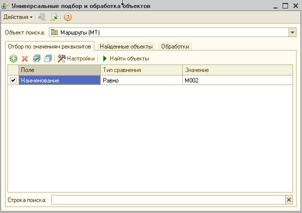
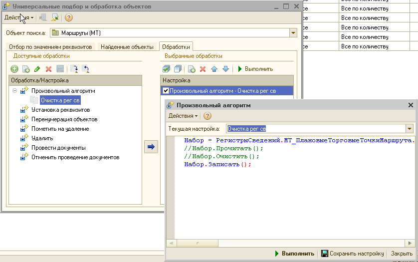

Очистить через обработку

Чтоб сработало можно сделать отбор по спр.
Написать свой алгорит

Пимер:
Набор = РегистрыСведений.МТ_ПлановыеТорговыеТочкиМаршрута.СоздатьНаборЗаписей();
Набор.Записать();
Набор = РегистрыСведений.МТ_ПлановыеТорговыеТочкиМаршрута.СоздатьНаборЗаписей();
Набор.Отбор.Период.Установить("20130207");
Набор.Записать();